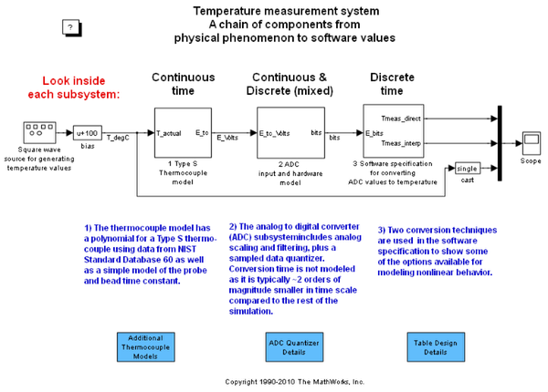
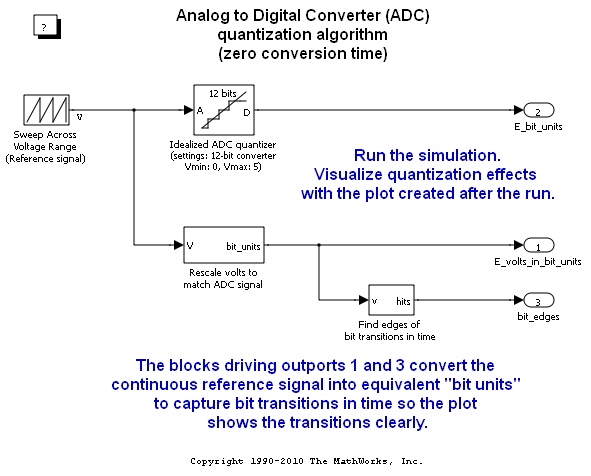
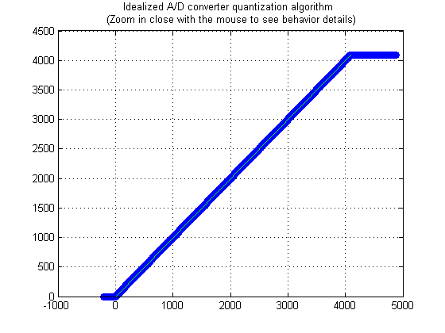
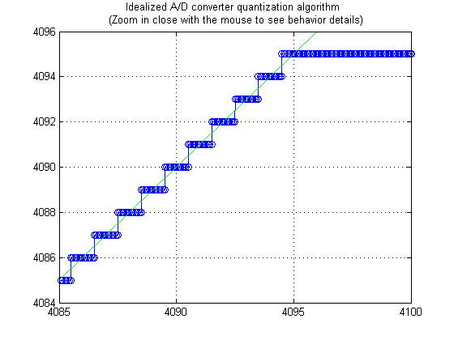
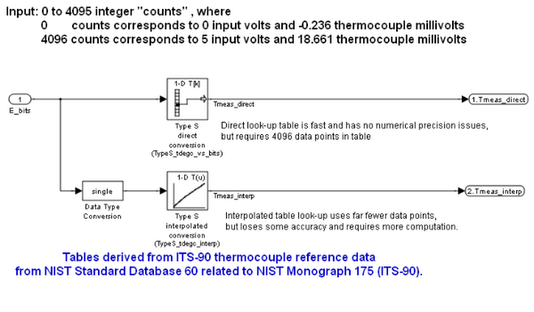
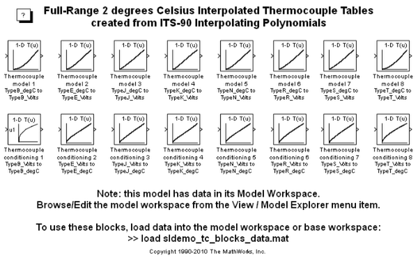

Approximating Nonlinear Relationships: Type S Thermocouple
Contents
- Thermocouple Modeling and Signal Conversion
- Simulating the Thermocouple Signal
- Anti-Aliasing Filter and Analog to Digital Converter (ADC) Models
- Understanding Data Converters
- Software Specification for Converting ADC output to Temperature Values
- Thermocouple Reference Data Download and Import Procedure
- Conditioning Reference Data for use in a Look-Up Table
- References
Thermocouple Modeling and Signal Conversion
The thermocouple is one of the popular analog transducers today, along with other devices such as position sensors, strain gages, pressure transducers, and resistance temperature devices (RTDs). Operating under the principle of the Seebeck effect (a.k.a. thermoelectric effect), thermocouples have an empirically determined nonlinear behavior that is well known over each junction type's useful operating range. If you run the model, you will be able to see the cumulative effect of each component on dynamic measurement accuracy. This demonstration will focus on models for each of these components in a dynamic temperature measurement system for a Type S (Platinum-10% Rhodium(+) versus Platinum(-) ) : a thermocouple device and probe assembly, a signal conditioning method, an analog to digital converter (ADC), and a software specification for converting the ADC output into a temperature value. An additional section shows how to obtain and use standard NIST ITS-90 thermocouple data with Simulink® models. Look-up tables and a polynomial block are used in this design to capture the nonlinear behavior of the thermocouple. Note that the polynomial block is a viable alternative to look-up tables for some applications, minimizing ROM usage at the cost of some additional computation for the full polynomial representation.
open_system('sldemo_tc')
 Figure 1: Temperature measurement system: a chain of components from physical phenomenon to software values
Simulating the Thermocouple Signal
The two main features of the thermocouple model are the probe and bead dynamics and the thermocouple's conversion of temperature into a millivolt signal. The probe+bead dynamics are modeled as a 30 msec first order system, and the nonlinear thermocouple behavior is modeled using the segment 1 polynomial data from NIST Standard Database 60 for a Type S thermocouple from -50 to 1063 degC. For numerical stability, the coefficients were scaled to return microvolts from the polynomial block. The output of the polynomial block is then scaled by 1e-6 using a gain block to convert the value to volts.
An alternative implementation to using the polynomial is an interpolated look-up table. Table data could be used in a look-up table block in place of the polynomial block. Sample data was constructed from NIST Standard Database 60 for a Type S thermocouple in file sldemo_create_tc_tabledata.m. Access to this database is described below in the section titled "Thermocouple Reference Data Download and Import Procedure".
Anti-Aliasing Filter and Analog to Digital Converter (ADC) Models
The ADC in this model expects a 0 to 5 volt signal, so the raw thermocouple sense voltage is biased and amplified corresponding to a range of -0.235 mV to 18.661 mV (-50 degC to 1765 degC). A third order Butterworth anti-aliasing filter was designed for Wn = 15 Hz using the Signal Processing Toolbox™:
[num,den] = butter(3, 15*2*pi, 'low', 's')
The output of the anti-aliasing filter feeds a sample-and-hold device that drives the quantization model. Since the sample period is 20 msec in this example, the conversion time is ignored as it is typically 2 orders of magnitude smaller for devices currently available. (Note: if the conversion time were an appreciable fraction of the sample period, it could not be ignored as it would significantly affect the system's dynamics.)
The quantization algorithm in the model takes in a 0 to 5 volt signal and outputs a 12-bit digital word in a 16-bit signed integer. A value of 0 corresponds to 0 Volts and a value of 4096 would correspond to 5 Volts. A change in the least significant bit (LSB) is about 1.2 mV. As 12 bits can only reach the value of 4095, the highest voltage that can be read by this device is approximately 4.9988 Volts. In order to have no more than 1/2 LSB error within the operating range, the quantizer changes values midway between each voltage point, resulting in a 1/2-width interval at 0 Volts and a 3/2-width interval just below 5 Volts. The last interval has 1 full LSB due to its 3/2-width size.
Understanding Data Converters
The sldemo_adc_quantize model allows you to explore the A/D converter component in more detail:
open_system('sldemo_adc_quantize')
 Figure 2: Details of ADC quantization modeling (zero conversion time)
sim('sldemo_adc_quantize') set(gcf,'Color',[1,1,1]);
Figure 3: Quantization characteristic of ADC.
ax = get(gcf,'Children'); set(ax(1), 'xlim', [4085, 4100]);
Figure 4: Quantization characteristic of ADC: zoomed in to top of range to reveal 1 LSB error behavior at high end (rest of range only has 1/2 LSB max error).
Software Specification for Converting ADC output to Temperature Values
The input conversion subsystem requires a 16 bit unsigned integer input from the ADC whose full scale range is 0 to 4095 counts, corresponding to -0.235 mV and 18.6564 mV thermocouple loop voltage. The best accuracy and fastest algorithm for input conversion is a direct look-up table. Since the input is an integer from 0 to 4095, a table can be constructed that gives the thermocouple temperature corresponding to each possible input value, so the conversion process can be reduced to indexing into a table. This however, requires one number per ADC output value and for a 12-bit ADC, this can be a burden in memory constrained environments. For double precision data, this is a 16 kB ROM requirement. See file sldemo_create_tc_tabledata.m for the method used to construct the direct look-up table from the Type S thermocouple reference data. The error associated with this approach is entirely isolated to the table construction process as there is an output value associated with every possible input value - the run-time look-up process introduces no additional error.
An interpolated table was also put into the model, using only 664 bytes. This is a big reduction in ROM required compared to the direct table look-up, but it takes a bit longer to compute than an indirect memory access and introduces error into the measurement, which goes down as the number of points in the table increases.
open_system(sprintf('sldemo_tc/3 Software specification\nfor converting\nADC values to temperature'))
 Thermocouple Reference Data Download and Import Procedure
Using the NIST ITS-90 Thermocouple Database (Standard Reference Database 60 from NIST Monograph 175), you can access the standard reference data describing the behavior for the eight standard thermocouple types. This database relates thermocouple output to the International Temperature Scale of 1990. Follow these steps to acquire and read in the data needed to fully exercise the support files included with this demo:
1. Visit the NIST Standard database 60 site on the Internet and download the file all.tab to a local directory. This file is the one under the All Thermocouple Types hyperlink. After the download is complete, return to this page.
(Note: The data set is also available in a .ZIP file from the MATLAB® Central File Exchange on page Test & Measurement > Hardware Support & Drivers > Simulating and Conditioning Thermocouple Signals )
2. cd to the directory where you downloaded the all.tab thermocouple database
3. Parse the database and convert it to a MATLAB structure array using the conversion tool readstdtcdata.m:
tcdata = readstdtcdata('all.tab');
save thermocouple_its90.mat tcdata;(tip: highlight the above MATLAB code and use right mouse menuitem "Evaluate Selection" to execute it)
You now have a complete set of temperature (T, degC) vs. voltage (E, mV) data, approximating polynomial coefficients, and inverse polynomial coefficients for the standard thermocouple types B, E, J, K, N, R, S, and T in the tcdata variable of file thermocouple_its90.mat. The MATLAB script in sldemo_create_tc_tabledata.m uses this data to prepare lookup table block parameters used in the demonstration model.
Conditioning Reference Data for use in a Look-Up Table
If you review the thermocouple data tables in the tcdata structure or in all.tab, you will probably notice a few things:
- Repeated 0 degC temperature points in the data
- Repeated voltage points in the data due to the 3-digit output format
- Non-monotonic behavior with two temperatures having the same output, e.g., for the Type B thermocouple, T(E) won't work but E(T) does work
The readstdtcdata() routine will remove the repeated 0 degC temperature points from the data, but the repeated voltages due to the data format and non-monotonic behavior of some of the curve ends must be dealt with on an individual basis. A reference model named sldemo_tc_blocks was constructed using sldemo_create_tc_blocks_data.m. It contains look-up tables with data populated from the interpolating polynomials for the eight standard thermocouples in all.tab:
open_system('sldemo_tc_blocks')
 Figure 5: Full-Range 2 degrees Celsius Interpolated Thermocouple Tables created from ITS-90 Interpolating Polynomials
References
1. NIST ITS-90 Thermocouple Database URL: http://srdata.nist.gov/its90/main
2. "Temperature-Electromotive Force Reference Functions and Tables for the Letter-Designated Thermocouple Types Based on the ITS-90". National Institute of Standards and Technology Monograph 175; 1993. 630 p.
3. The International Temperature Scale of 1990 URL: http://www.its-90.com
4. Thermoelectric Effects in Metals: Thermocouples, S. O. Kasap 1997 URL: http://electronicmaterials.usask.ca/Samples/Thermoelectric-Seebeck.pdf
NOTE: for determining empirical relationships of complex systems such as engines and for fitting models to measured data, MathWorks® offers the Model Based Calibration Toolbox which employs the Design of Experiments methodology for optimized table database creation, plus value extraction and automated table filling components.